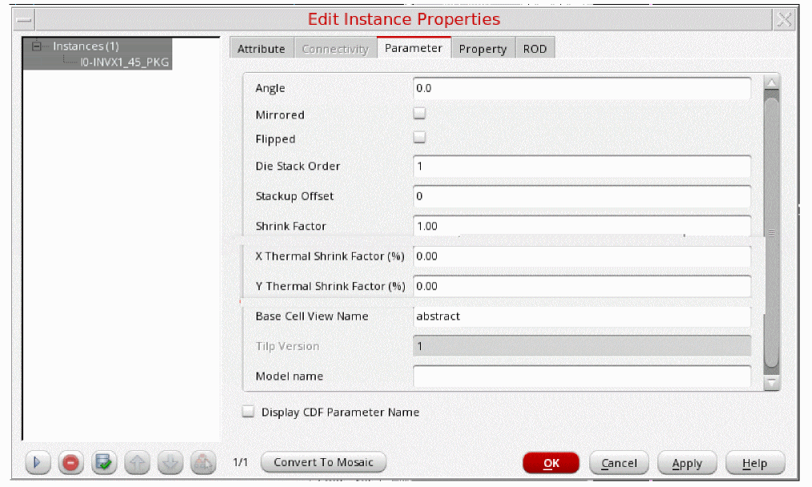
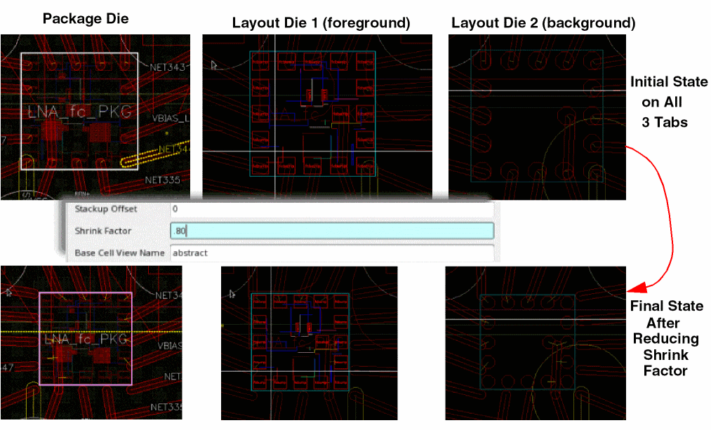

Changes to TILP Parameters in Edit-in-Concert mode
In Edit-in-Concert mode, any changes you make to the Mirrored, Flipped, and Shrink Factor TILP parameters are propagated automatically to the other tabs.

In the following example, in Edit-in-Concert mode, the Shrink Factor of a TILP is reduced in the package die. The change is propagated to all other dies that are open in Edit-in-Concert.

Related Topics
- Editing TILP parameters
- Edit-in-Concert
- Modify in Edit-in-Concert Mode
- Movement of Dies in Edit-in-Concert Mode
- Change from Package view to Layout View
- Net Tracing in Editing-In-Concert Mode
- Probing a Design in Edit-in-Concert Mode
Return to top